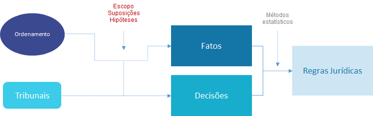
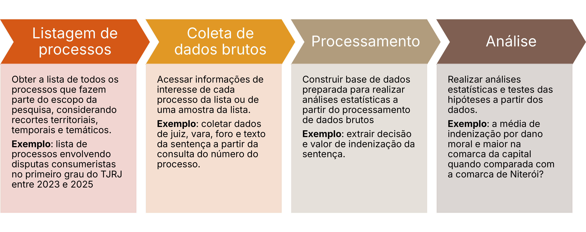
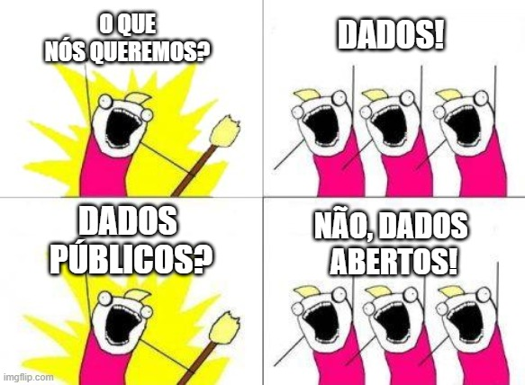
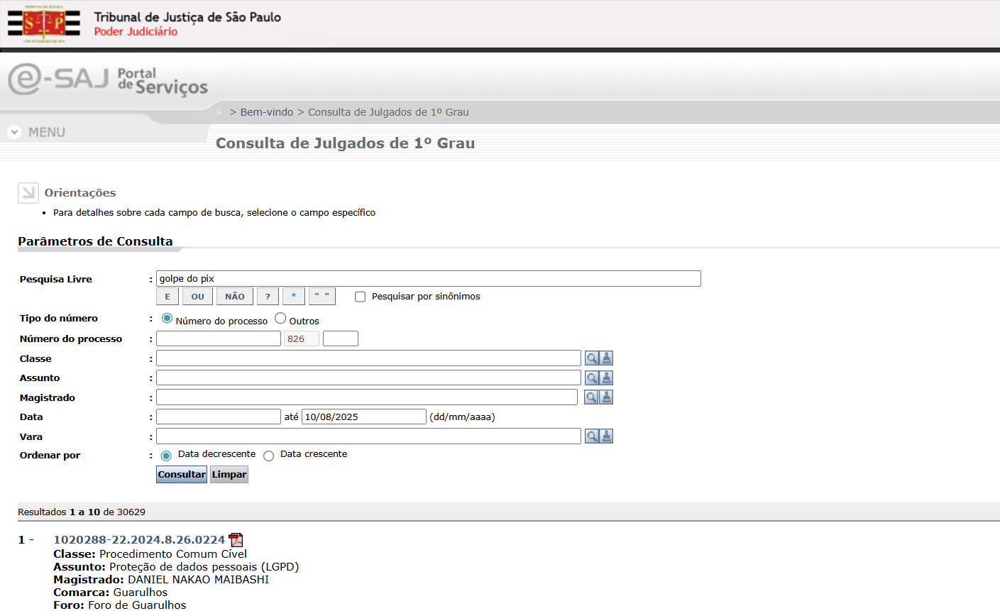
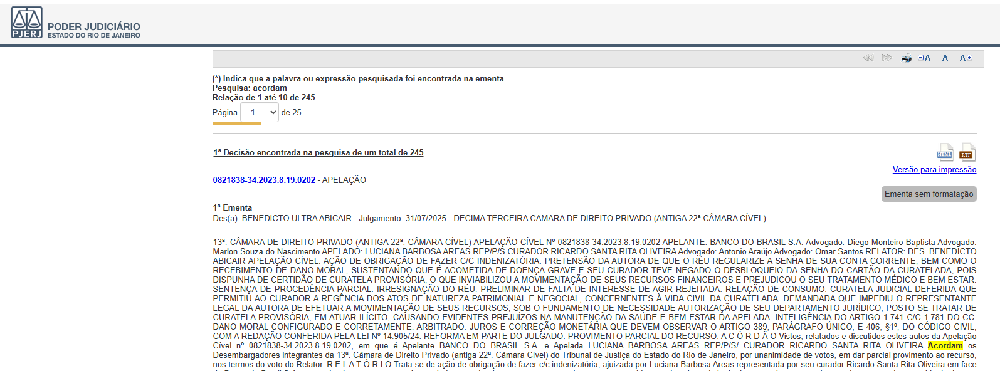
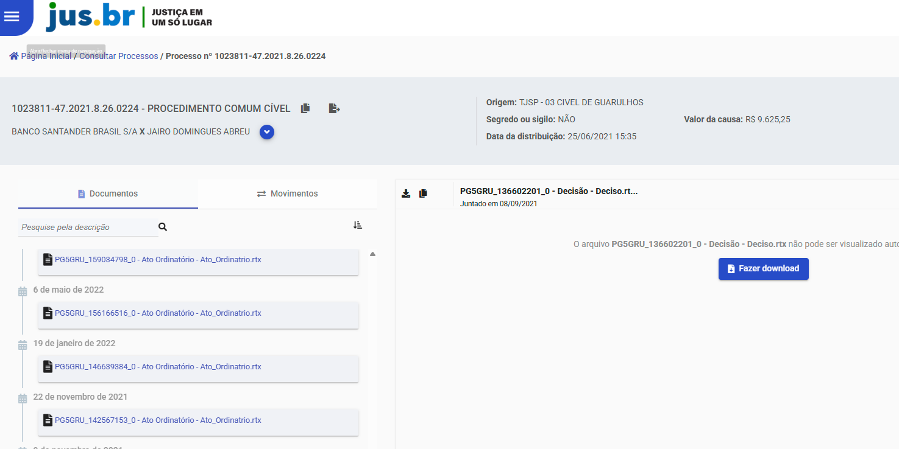
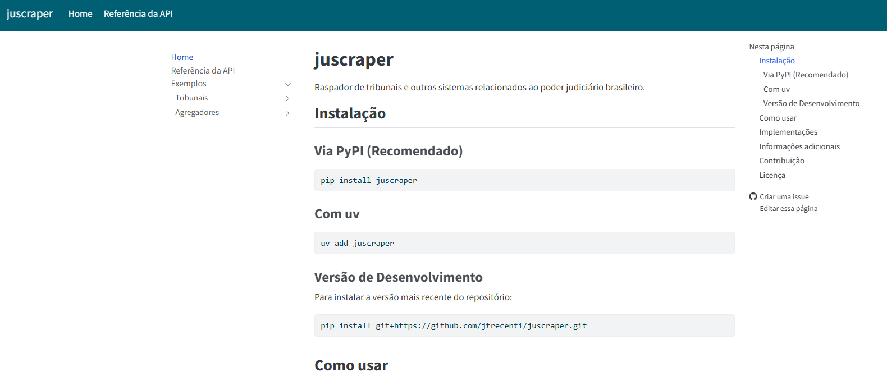
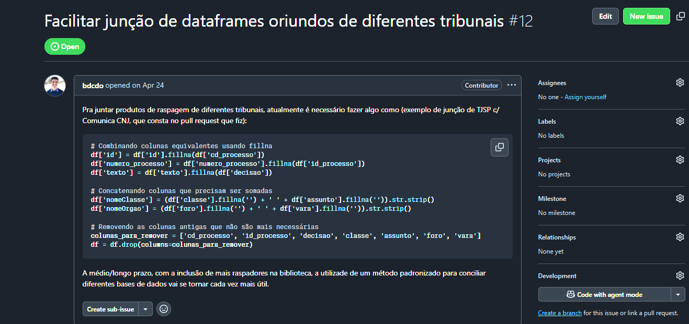
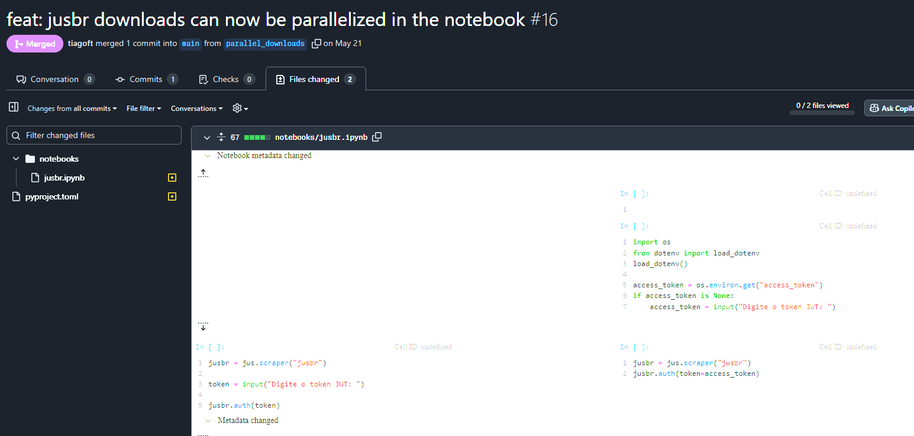

juscraper
Ferramenta open source para extração de dados jurídicos
Contexto
O que é jurimetria?
Jurimetria é a aplicação da estatística no direito. Ela é usada para descobrir regras jurídicas a partir das marcas que o Direito deixa na sociedade.

Como fazemos uma uma pesquisa jurimétrica?

Sem dados, não há jurimetria

Dados públicos x Dados abertos
Dados abertos são dados que podem ser livremente usados, reutilizados e redistribuídos por qualquer pessoa – sujeitos, no máximo, à exigência de atribuição da fonte e compartilhamento pelas mesmas regras.
Princípios de dados abertos governamentais
1 - Completos. Todos os dados públicos estão disponíveis. Dados públicos são dados que não estão sujeitos a limitações válidas de privacidade, segurança ou controle de acesso.
2 - Primários. Os dados são apresentados tais como os coletados na fonte, com o maior nível possível de granularidade e sem agregação ou modificação.
3 - Atuais. Os dados são disponibilizados o mais rápido possível para preservar o seu valor.
4 - Acessíveis. Os dados são disponibilizados para o maior alcance possível de usuários e para os propósitos mais variados possíveis.
Os dados do judiciário são públicos, mas não são abertos.
Hoje, existem exceções.
Datajud
Dados abertos STJ
Não é aberto

Não é aberto

Não é aberto

Para cada pesquisa jurimétrica, precisamos implementar robôs para extrair os dados.
juscraper
O que é?
jus \(\cdot\) scraper
- Ferramenta open source para extração de dados jurídicos.
- Construída para facilitar a coleta de dados do judiciário brasileiro.
Pessoas contribuindo


Como funciona
- Escrita em python, visando facilitar o uso por pessoas com pouca experiência em programação.
- Possível de usar diretamente no Google Colab, sem necessidade de instalação local.
Vantagens
- Flexível. Permite baixar dados brutos ou processados em tabela.
- Escalável. Permite trabalhar com grande volume de dados, ao integrar com ferramentas de paralelização.
- Modular. Possui uma arquitetura modular, permitindo adicionar novos tribunais e fontes de dados facilmente.
Exemplos 1: TJSP

Exemplo 2: Datajud

Exemplo 2: jus.br

Site

Limitações atuais
- Foco inicial em agregadores (Datajud e jus.br) e TJSP.
- Ainda falta suporte para outros tribunais e fontes de dados.
- Necessidade de melhorias na documentação e exemplos de uso.
- Uso excessivo de vibe coding.
Colaborando com o projeto
Documentando problemas

Contribuindo com código

Resumo
- Precidamos de dados para fazer pesquisas jurimétricas.
- Dados do judiciário são públicos, mas não são abertos. Infelizmente, precisamos construir ferramentas para extrair esses dados.
juscraperé uma ferramenta open source para extração de dados jurídicos.- A ferramenta está em constante evolução, com novas funcionalidades sendo adicionadas regularmente.
Obrigado!
2025